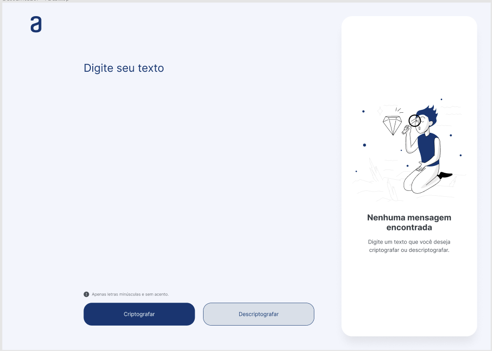

-
REST API - One Piece
API RESTful desenvolvida em Java 20 e Spring Boot 3, inspirada no mundo de One Piece. A aplicação utiliza um container Docker com a imagem do PostgreSQL como banco de dados. O versionamento de commits é feito utilizando Git Semântico para manter um histórico claro e compreensível.
-

Decodificador de texto
O Decodificador de Texto é um projeto desenvolvido utilizando as tecnologias fundamentais da web: HTML, CSS e JavaScript. Este projeto foi concebido como parte do programa de educação Oracle One, em colaboração com a renomada plataforma de ensino Alura e a gigante da tecnologia, Oracle.
Link para o projeto: Codificador